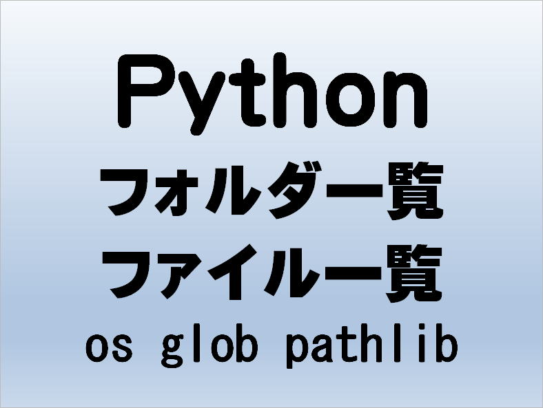

第20回.フォルダとファイルの一覧を取得（os,glob,pathlib）

Pyhtonでフォルダやファイルを操作する手段は複数提供されています。
標準ライブラのos,glob,pathlibについてサンプルコードとともに解説していきます。
osとglobについて簡単に使用例を見てから、pathlibについて詳しく見ていきます。
目次
出力結果のサンプルデータについて
def vprint(s):
[print(p) for p in s]os.path,os.listdirの使用例
osモジュールはオペレーティングシステムインターフェイスです。
import os
#以下は相対パス、絶対パスでも良い
path = "./test"
print("\nパスの存在確認")
print(os.path.exists(path))
print(os.path.exists(path + "/file01.txt"))
print("\nディレクトリ&ファイル")
files = os.listdir(path)
vprint(files)
print("\nディレクトリのみ")
dir = [f for f in files if os.path.isdir(os.path.join(path, f))]
vprint(dir)
print("\nファイルのみ")
file = [f for f in files if os.path.isfile(os.path.join(path, f))]
vprint(file)
glob.globの使用例
返される結果の順序は不定です。
パターンマッチング
| * | 長さ0文字以上の任意の文字列 |
| ? | 任意の一文字 |
| [] | 特定の一文字 |
| ** | あらゆるファイルや0個以上のディレクトリ、サブディレクトリおよびディレクトリへのシンボリックリンクにマッチします。 |
import glob
#以下は相対パス、絶対パスでも良い
path = "./test"
#ディレクトリ&ファイルの存在確認
print("\nディレクトリ&ファイル")
files = glob.glob(path + "/*")
vprint(files)
print("\n特定の拡張子")
files = glob.glob(path + "/*.txt")
vprint(files)
print("\n全サブディレクトリの全ファイル")
files = glob.glob(path + "/**/*", recursive=True)
vprint(files)
pathnameはパス名を含む文字列でなければなりません。
pathnameは絶対パスまたは相対パスで、シェルスタイルのワイルドカードを含めることができます。
壊れたシンボリックリンクが結果に含まれます（シェルと同様）。
結果がソートされるかどうかは、ファイルシステムによって異なります。
この関数の呼び出し中に条件を満たすファイルが削除または追加された場合、そのファイルのパス名を含めるかどうかは指定されていません。
パターン"**"はあらゆるファイルや0個以上のディレクトリ、サブディレクトリおよびディレクトリへのシンボリックリンクにマッチします。
pathlibのプロパティ・メソッド一覧
純粋パス（PurePath）と以下の具象パスからなります。
具象パス
したがって、Pathを使えば問題ありません。
演算子
PurePathのプロパティ・メソッド
| プロパティ メソッド | 説明 |
| drive | ドライブ文字または名前を表す文字列があればそれになります。 |
| root | ローカルまたはグローバルルートを表す文字列があればそれになります。 |
| anchor | ドライブとルートを結合した文字列になります。 |
| parents | パスの論理的な上位パスにアクセスできるイミュータブルなシーケンスになります。 |
| parent | パスの論理的な上位パスになります。 |
| name | パス要素の末尾を表す文字列があればそれになります。ドライブやルートは含まれません。 |
| suffix | 末尾の要素に拡張子があればそれになります。 |
| suffixes | パスのファイル拡張子のリストになります。 |
| stem | パス要素の末尾から拡張子を除いたものになります。 |
| as_posix | フォワードスラッシュ(/)を使用したパスを表す文字列を返します。 |
| as_uri | fileURIで表したパスを返します。 |
| is_absolute | パスが絶対パスかどうかを返します。 |
| is_reserved | PureWindowsPathの場合はパスがWindows上で予約されていればTrueを返し、そうでなければFalseを返します。 PurePosixPathの場合は常にFalseを返します。 |
| joinpath | このメソッドの呼び出しは引数otherを順々に繋げることと等価になります。 |
| match | 現在のパスがglob形式で与えられたパターンと一致したらTrueを、一致しなければFalseを返します。 |
| relative_to | otherで表されたパスから現在のパスへの相対パスを返します。 |
| with_name | 現在のパスのname部分を変更したパスを返します。 オリジナルパスにname部分がない場合はValueErrorが送出されます。 |
| with_suffix | suffixを変更した新しいパスを返します。 元のパスにsuffixが無かった場合、代わりに新しいsuffixが追加されます。 suffixが空文字列だった場合、元のsuffixは除去されます。 |
Pathのプロパティ・メソッド
| プロパティ メソッド |
説明 |
| cwd | (os.getcwd()が返す)現在のディレクトリを表す新しいパスオブジェクトを返します。 |
| home | ユーザーのホームディレクトリ(os.path.expanduser()での~の返り値)を表す新しいパスオブジェクトを返します。 |
| stat | os.stat（）のような、このパスに関する情報を含むos.stat_resultオブジェクトを返します。 結果は、このメソッドの呼び出しごとに調べられます。 |
| chmod | os.chmod()のようにファイルのモードとアクセス権限を変更します。 |
| exists | パスが既存のファイルかディレクトリを指しているかどうかを返します。 |
| expanduser | パス要素~および~userをos.path.expanduser()が返すように展開した新しいパスオブジェクトを返します。 |
| glob | このパスで表されるディレクトリ内の特定の相対パターンを取得し、一致するすべてのファイルを生成します。 |
| group | ファイルを所有するグループ名を返します。ファイルのGIDがシステムのデータベースに見つからなかった場合はKeyErrorが送出されます。 |
| is_dir | パスがディレクトリ(またはディレクトリへのシンボリックリンク)を指していた場合Trueを返し、その他の種類のファイルだった場合Falseを返します。 |
| is_file | パスが一般ファイル(または一般ファイルへのシンボリックリンク)を指していた場合Trueを返します。その他の種類のファイルを指していた場合Falseを返します。 |
| is_mount | パス名pathがマウントポイントmountpoint(ファイルシステムの中で異なるファイルシステムがマウントされているところ)ならTrueを返します。 |
| is_symlink | パスがシンボリックリンクを指していた場合Trueを返し、その他の場合はFalseを返します。 |
| is_socket | パスがUnixソケット(またはUnixソケットへのシンボリックリンク)を指していた場合Trueを返します。 その他の種類のファイルの場合Falseを返します。 |
| is_fifo | パスがFIFO(またはFIFOへのシンボリックリンク)を指していた場合Trueを返します。 その他の種類のファイルの場合はFalseを返します。 |
| is_block_device | パスがブロックデバイス(またはブロックデバイスへのシンボリックリンク)を指していた場合Trueを返します。 その他の種類のファイルの場合はFalseを返します。 |
| is_char_device | パスがキャラクターデバイス(またはキャラクターデバイスへのシンボリックリンク)を指していた場合、Trueを返します。 その他の種類のファイルの場合Falseを返します。 |
| iterdir | パスがディレクトリを指していた場合、ディレクトリの内容のパスオブジェクトのイテレータを作成します。 任意の順序で生成されす。 特別なエントリ「.」および「..」は含まれていません。 |
| lchmod | Path.chmod()のように振る舞いますが、パスがシンボリックリンクを指していた場合、リンク先ではなくシンボリックリンク自身のモードが変更されます。 |
| lstat | Path.stat()のように振る舞いますが、パスがシンボリックリンクを指していた場合、リンク先ではなくシンボリックリンク自身の情報を返します。 |
| mkdir | 与えられたパスに新しくディレクトリを作成します。 modeが与えられていた場合、プロセスのumask値と組み合わせてファイルのモードとアクセスフラグを決定します。 パスがすでに存在していた場合FileExistsErrorが送出されます。 |
| open | 組み込み関数open()のようにパスが指しているファイルを開きます。 |
| owner | ファイルの所有者のユーザー名を返します。 ファイルのUIDがシステムのデータベースに見つからない場合KeyErrorが送出されます。 |
| read_bytes | 指定されたファイルの内容をバイナリオブジェクトで返します。 |
| read_text | 指定されたファイルの内容を文字列としてデコードして返します。 |
| rename | このファイルまたはディレクトリの名前を指定されたターゲットに変更し、ターゲットを指す新しいPathインスタンスを返します。 |
| replace | このファイルまたはディレクトリの名前を指定されたターゲットに変更し、ターゲットを指す新しいPathインスタンスを返します。 ターゲットが既存のファイルまたはディレクトリを指している場合、無条件に置き換えられます。 |
| resolve | パスを絶対パスにし、あらゆるシンボリックリンクを解決します。新しいパスオブジェクトが返されます。 |
| rglob | ThisislikecallingPath.glob()with"**/"addedinfrontofthegivenrelativepattern。 |
| rmdir | 現在のディレクトリを削除します。 ディレクトリは空でなければなりません。 |
| samefile | このパスが参照するファイルがother_path(Pathオブジェクトか文字列)と同じであればTrueを、異なるファイルであればFalseを返します。 意味的にはos.path.samefile()およびos.path.samestat()と同じです。 |
| symlink_to | 現在のパスにtargetへのシンボリックリンクを作成します。 Windowsでは、リンク対象がディレクトリの場合target_is_directoryが真でなければなりません(デフォルトはFalse)。 POSIXでは、target_is_directoryの値は無視されます。 |
| touch | 与えられたパスにファイルを作成します。 modeが与えられた場合、プロセスのumask値と組み合わせてファイルのモードとアクセスフラグが決定されます。 ファイルがすでに存在した場合、exist_okが真ならばこの関数は正常に終了します(そしてファイルの更新日付が現在の日時に変更されます)。 その他の場合はFileExistsErrorが送出されます。 |
| unlink | このファイルまたはシンボリックリンクを削除します。 パスがディレクトリを指している場合はPath.rmdir()を使用してください。 |
| link_to | targetという名前のパスを指すハードリンクを作成します。 |
| write_bytes | 指定されたファイルをバイトモードで開き、dataを書き込み、ファイルを閉じます。 |
| write_text | 指定されたファイルをテキストモードで開き、dataを書き込み、ファイルを閉じます。 |
パターンマッチング
| * | 長さ0文字以上の任意の文字列 |
| ? | 任意の一文字 |
| [] | 特定の一文字 |
| ** | あらゆるファイルや0個以上のディレクトリ、サブディレクトリおよびディレクトリへのシンボリックリンクにマッチします。 |
pathlib.Pathの使用例
from pathlib import Path
#以下は相対パス、絶対パスでも良い
p = Path("./test")
print("\nパスの存在確認")
print(p.exists())
print((p / "file01.txt").exists())
print("\nディレクトリ&ファイル")
vprint(p.iterdir())
print("\n#ディレクトリ")
dirs = [x for x in p.iterdir() if x.is_dir()]
vprint(dirs)
print("\n#ファイル")
files = [x for x in p.iterdir() if x.is_file()]
vprint(files)
print("\n#サブディレクトリも含めた全txtファイル")
files = p.glob('**/*.txt')
vprint(files)
任意の順序で生成されす。
特別なエントリ「.」および「..」は含まれていません。
言い換えれば、再帰的な Glob 走査が可能という意味です
同じテーマ「Python入門」の記事
第16回.Pythonの引数は参照渡しだが・・・
第17回.リスト内包表記
第18回.例外処理（try文）とexception一覧
第19回.import文（パッケージ・モジュールのインポート）
第20回.フォルダとファイルの一覧を取得（os,glob,pathlib）
第21回.CSV読み込みとopen()関数とwith文
第22回.CSV読み書き（csvモジュール）
第23回.pipコマンド（外部ライブラリのインストール）
第24回.エクセルを操作する（openpyxl）
第24回.エクセルを操作する（pywin32:win32com）
第26回.WEBスクレイピング（selenium）
新着記事NEW ・・・新着記事一覧を見る
VBA100本ノック 100本目：WEBから100本ノックのリストを取得｜VBA練習問題（3月3日）
VBA100本ノック 99本目：自動席替え（行列と前後左右が全て違うように）｜VBA練習問題（3月2日）
VBA100本ノック 98本目：席替えルールが守られているか確認｜VBA練習問題（3月1日）
VBA100本ノック 97本目：Accessデータを取得（グループ集計）｜VBA練習問題（2月27日）
VBA100本ノック 96本目：Accessデータを取得（マスタ結合&抽出）｜VBA練習問題（2月26日）
VBA100本ノック 95本目：図形のテキストを検索するフォーム作成｜VBA練習問題（2月24日）
VBA100本ノック 94本目：表範囲からHTMLのtableタグを作成｜VBA練習問題（2月23日）
VBA100本ノック 93本目：複数ブックを連結して再分割｜VBA練習問題（2月22日）
VBA100本ノック 92本目：セルの色を16進で返す関数｜VBA練習問題（2月20日）
VBA100本ノック 91本目：時間計算（残業時間の月間合計）｜VBA練習問題（2月19日）
アクセスランキング ・・・ ランキング一覧を見る
1.最終行の取得（End,Rows.Count）｜VBA入門
2.RangeとCellsの使い方｜VBA入門
3.変数宣言のDimとデータ型｜VBA入門
4.マクロって何？VBAって何？｜VBA入門
5.Range以外の指定方法（Cells,Rows,Columns）｜VBA入門
6.セルのコピー&値の貼り付け（PasteSpecial）｜VBA入門
7.繰り返し処理（For Next)｜VBA入門
8.セルに文字を入れるとは（Range,Value）｜VBA入門
9.マクロはどこに書くの（VBEの起動）｜VBA入門
10.とにかく書いてみよう（Sub,End Sub）｜VBA入門
このサイトがお役に立ちましたら「シェア」「Bookmark」をお願いいたします。
記述には細心の注意をしたつもりですが、
間違いやご指摘がありましたら、「お問い合わせ」からお知らせいただけると幸いです。
掲載のVBAコードは動作を保証するものではなく、あくまでVBA学習のサンプルとして掲載しています。
掲載のVBAコードは自己責任でご使用ください。万一データ破損等の損害が発生しても責任は負いません。